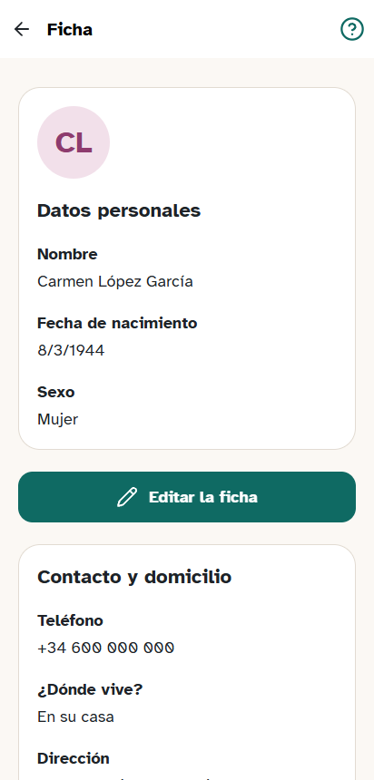

Inicio › Manual › La persona cuidada
La persona cuidada
Sus datos básicos, su contacto y sus papeles.

La ficha
Nombre, edad, alergias y, si puedes verlos, su teléfono y su domicilio, con «Llamar» y «Cómo llegar».
Cambiar la ficha
Solo para: coordinación
Solo la coordinación puede cambiarla. Para el domicilio, empieza a escribir y elige la dirección de la lista.
Papeles y caducidades
✦ Premium · Solo para: coordinación, quien cuida
DNI, tarjeta sanitaria, seguro, resolución de la dependencia… con su foto y su fecha de caducidad. La app avisa 60 y 15 días antes de que caduquen.
El DNI se puede leer con la cámara.
Ley de Dependencia
Desde la ficha, «Ley de Dependencia» explica los pasos y, con la comunidad autónoma del círculo, quién lo gestiona, dónde se pide, su teléfono y su web oficial.
La comunidad la elige la coordinación (es la misma que la de las vacunas).
Cómo va el trámite
✦ Premium · Solo para: coordinación, quien cuida
La coordinación apunta la solicitud, la visita de valoración, el grado, el PIA y los servicios o ayudas, y puede enlazar la resolución guardada en Papeles.
La app avisa a la coordinación si pasan 3 meses desde la solicitud sin resolver y 30 días antes de una revisión.
¿Aún no usas Tutelia?
Es gratis para organizar el día a día entre varias personas. Así se empieza.